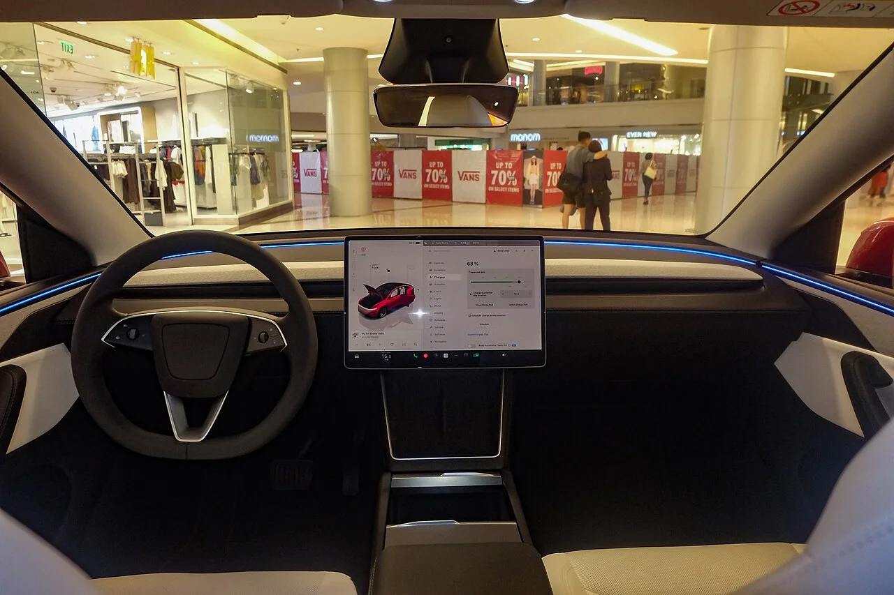

▲ 2026년 국내 수입 전기차 월간 판매 1위에 오른 테슬라 모델Y ⓒ Chanokchon, Wikimedia Commons (CC BY-SA 4.0)
테슬라 모델Y가 2026년 국내 시장에서 월간 판매 1위를 기록하며 국내 소비자에게 가장 무난한 테슬라 모델이라는 평가를 재확인했습니다. 세단인 모델3보다 차체가 높아 실내 공간과 적재공간이 넓다는 점이 꾸준한 인기 비결로 꼽힙니다. 트림별 가격과 제원을 정리했습니다.
1. 가격 & 트림 — RWD부터 L AWD까지 3단계

▲ 모델Y 후면부. 3개 트림으로 운영되며 최상위 L AWD는 6,999만 원부터 시작한다 ⓒ Ethan Llamas, Wikimedia Commons (CC BY-SA 4.0)
2026년형 모델Y는 프리미엄 RWD(4,999만 원), 프리미엄 롱레인지 AWD(6,399만 원), L AWD(6,999만 원) 3개 트림으로 운영됩니다. 다만 테슬라는 가격 변동이 잦은 편이라, 실제 구매 전에는 테슬라 공식 주문 페이지에서 최종 가격을 확인하는 것이 좋습니다.
2. 제원 & 판매량 — 넓은 공간이 만든 스테디셀러

▲ 모델Y 실내. 세단인 모델3보다 차체가 높아 실내·적재공간이 넓다 ⓒ Ethan Llamas, Wikimedia Commons (CC BY-SA 4.0)
제원 면에서는 주행거리 400~543km, 배터리 용량 70.8~97.3kWh, 복합전비 5.4~5.6km/kWh를 기록합니다. 중형 전기 SUV라는 체급에 걸맞게 세단형인 모델3보다 시트 포지션이 높고 실내·적재공간이 넉넉하다는 점이 국내 소비자들에게 특히 어필하는 요소로 꼽힙니다. 이런 실용성을 바탕으로 모델Y는 2026년 국내 수입 전기차 시장에서 월간 판매 1위에 오르며, 여전히 가장 무난하고 대중적인 테슬라 모델이라는 입지를 지키고 있습니다.